Techniques beyond the first pipeline: multi-panel figures, relational layouts, scale control, data-prep recipes, and the ggplot2 escape hatch.
Multi-panel composition
compose_*() assembles independent plots
(different data, geometries, scales). split_*() facets
one dataset. All composers return a
plotit_composite that continues into
label_*(), style(), and
export().
| Function | Layout |
|---|---|
compose_grid() |
rows × columns |
compose_inset() |
floating overlay |
compose_marginal() |
scatter + marginal distributions |
compose_annot() |
base plot + annotation strips (e.g. dendrogram) |
p1 <- iris |>
plotit(encode(x = Sepal.Width, y = Sepal.Length, colour = Species)) |>
mark_point(alpha = 0.6)
p2 <- iris |>
plotit(encode(x = Species, y = Sepal.Length, fill = Species)) |>
mark_boxplot()
compose_grid(p1, p2, ncol = 2, tag_levels = "A") |>
label_title("Iris dashboard")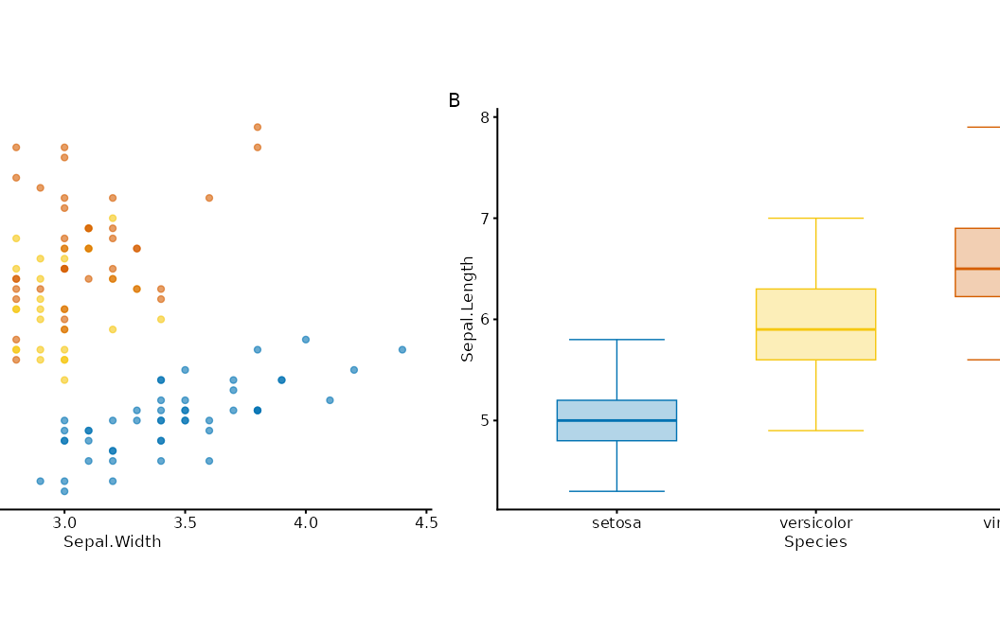
main <- iris |>
plotit(encode(x = Sepal.Width, y = Sepal.Length, colour = Species)) |>
mark_point()
top <- iris |>
plotit(encode(x = Sepal.Width, fill = Species)) |>
mark_histogram(bins = 15, alpha = 0.5)
right <- iris |>
plotit(encode(x = Sepal.Length, fill = Species)) |>
mark_histogram(bins = 15, alpha = 0.5) |>
project_cartesian(flip = TRUE)
compose_marginal(main, top, right)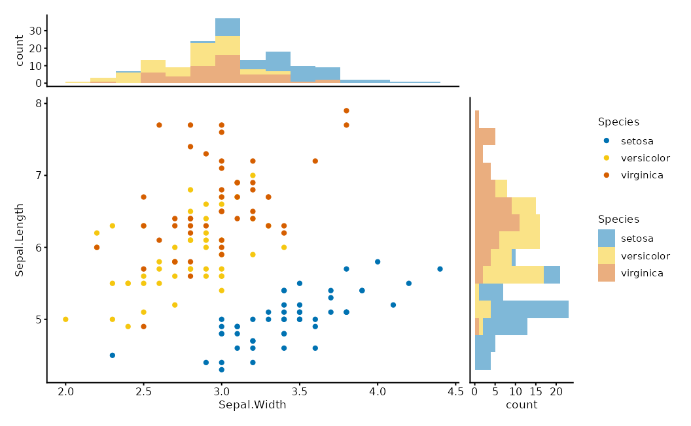
compose_inset(p1, p2, left = 0.6, bottom = 0.6, right = 0.95, top = 0.95)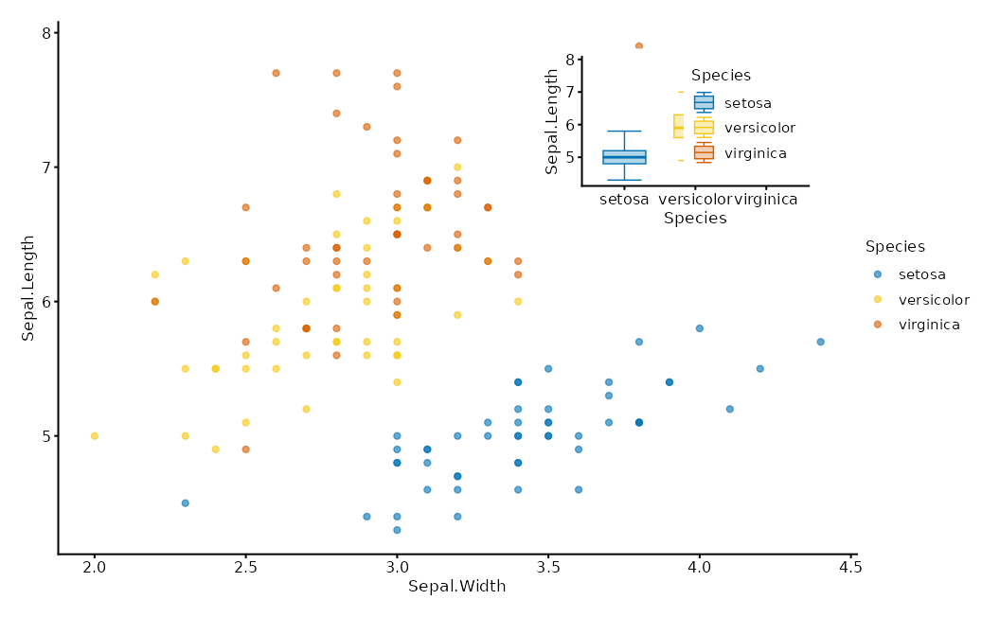
Relational layouts
A layout is a data transform, not a layer.
as_graph() normalises relations into a
plotit_graph; layout_*() bakes coordinates
into its tables; marks render sub-tables with
data = ~table.
edges / matrix / tree ──as_graph()──▶ plotit_graph ──layout_*()──▶ x/y columns
│
plotit(graph) ──▶ mark_*(data = ~nodes | ~edges | ~ribbons)
flows <- data.frame(
source = c("A", "A", "B", "B", "C"),
target = c("B", "C", "C", "D", "D"),
value = c(10, 5, 8, 3, 6)
)
# Sugar path
flows |>
plotit(encode(source = source, target = target, value = value, fill = source)) |>
mark_sankey()
#> Coordinate system already present.
#> ℹ Adding new coordinate system, which will replace the existing one.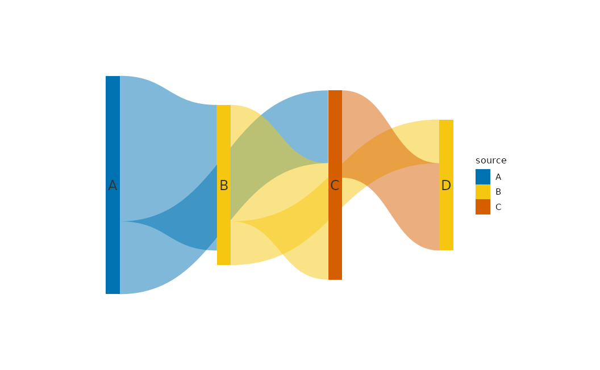
# Explicit layout path
as_graph(flows) |>
plotit() |>
layout_sankey() |>
mark_polygon(data = ~ribbons) |>
mark_rect(data = ~nodes)
edges <- data.frame(source = c("a", "a", "b", "c"), target = c("b", "c", "d", "d"))
nodes <- data.frame(id = c("a", "b", "c", "d"), type = c("x", "y", "x", "y"))
as_graph(edges, nodes = nodes) |>
plotit() |>
layout_force(seed = 4) |>
mark_rule(data = ~edges) |>
mark_point(data = ~nodes)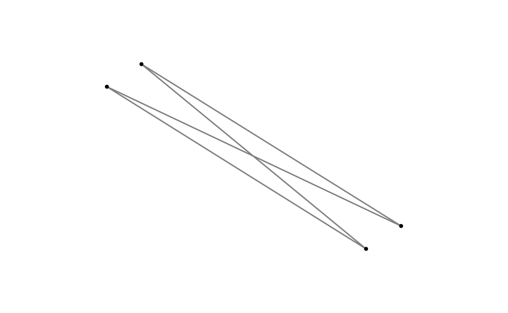
| Layout | Engine | Notes |
|---|---|---|
layout_force |
Fruchterman–Reingold |
seed required |
layout_circle |
trigonometric | order_by |
layout_tree |
leaf-order walk | direction |
layout_dendrogram |
hclust heights | direction |
layout_chord |
sector + Bézier ribbons | deterministic |
layout_sankey |
layered + Bézier ribbons | deterministic |
layout_treemap |
squarify | hierarchical table |
Relational sugar marks (mark_sankey,
mark_treemap, mark_network,
mark_chord) call the same engines. Prefer sugar for
one-liners; drop to layout_* when you need custom marks on
sub-tables.
Scales in depth
All scale_*() functions share name,
trans, limits, range,
breaks, labels.
trans |
Effect | Typical aesthetic |
|---|---|---|
"identity" |
linear (default for x/y) | position |
"log", "log10",
"log2", "sqrt"
|
transform data | x, y |
"reverse" |
flip order | most |
"discrete" |
treat as categories | colour, shape, … |
"binned" |
bin then discretise | colour, fill, size |
range is the visual output domain
(Vega-aligned):
- colour/fill: scheme name (
"viridis","brewer","friendly","rdbu", …) or colour vector - size / alpha: numeric bounds (
c(1, 6),c(0.1, 1)) - shape / linetype: shape codes / linetype names
mtcars |>
plotit(encode(x = wt, y = mpg, colour = hp)) |>
mark_point() |>
scale_x(trans = "log10") |>
scale_color(range = "rdbu", mid = 0)
#> Scale for colour is already present.
#> Adding another scale for colour, which will replace the existing scale.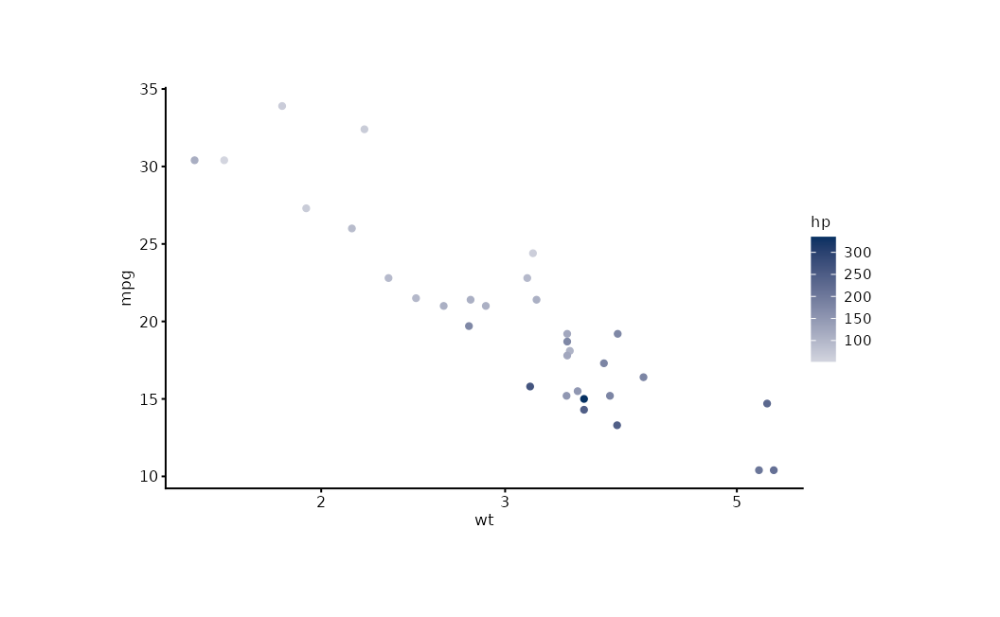
iris |>
plotit(encode(x = Sepal.Width, y = Sepal.Length, colour = Sepal.Length)) |>
mark_point() |>
scale_color(trans = "binned", n_bins = 5)
#> Scale for colour is already present.
#> Adding another scale for colour, which will replace the existing scale.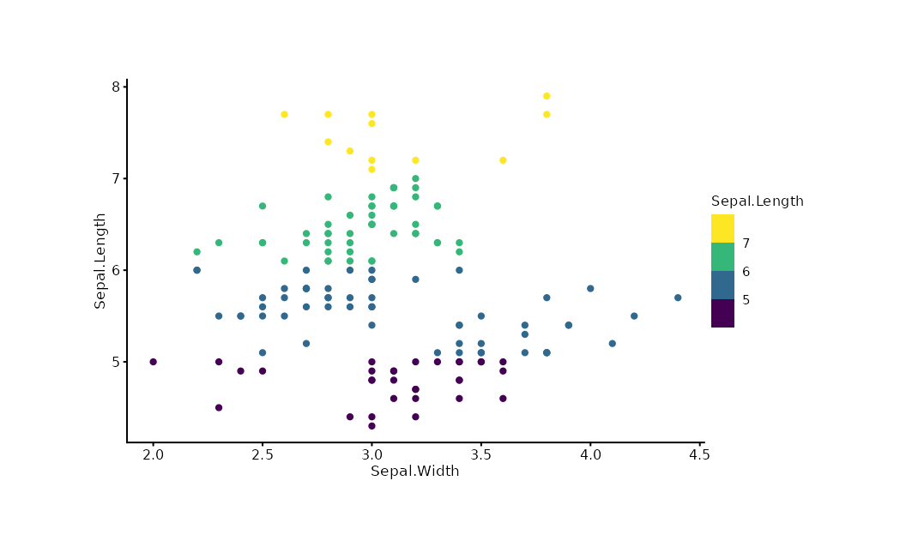
Date/POSIXct columns auto-route to a date axis — do
not force trans = "identity" on them.
Labels, themes, export
Three-parameter protocol: reset > hide
> text.
iris |>
plotit(encode(x = Sepal.Width, y = Sepal.Length, colour = Species)) |>
mark_point() |>
label_title("Iris Measurements") |>
label_subtitle("Anderson's Iris Data") |>
label_caption("Source: R.A. Fisher, 1936") |>
label_axis("Sepal Width (cm)", aes = "x") |>
label_legend("Species", aes = "colour") |>
style(base_size = 12)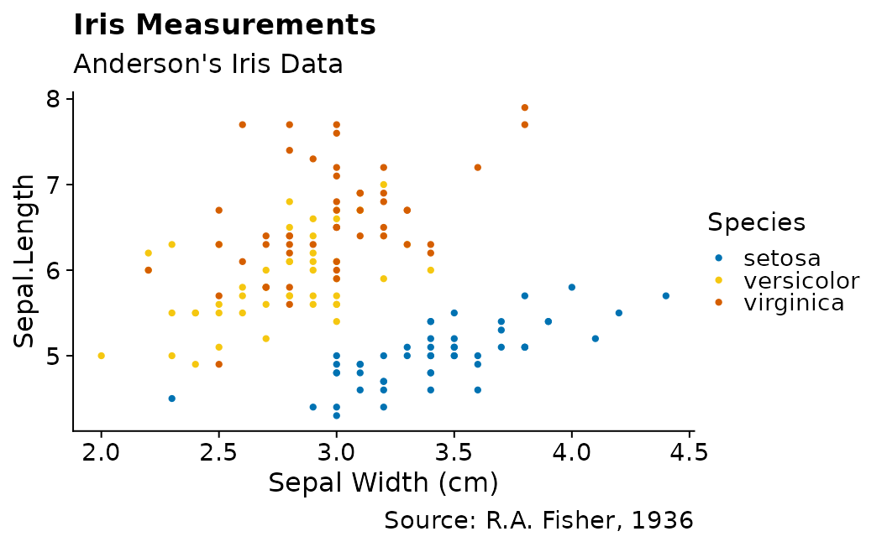
export(p, "figure.pdf", width = 8, height = 5, dpi = 300)The ggplot2 escape hatch
add_ggplot() appends any ggplot2 layer, guide, or theme
while returning a plotit object so the pipe continues.
iris |>
plotit(encode(x = Sepal.Width, y = Sepal.Length)) |>
mark_point() |>
add_ggplot(ggplot2::geom_smooth(method = "lm", se = FALSE, colour = "#E15759"))
#> `geom_smooth()` using formula = 'y ~ x'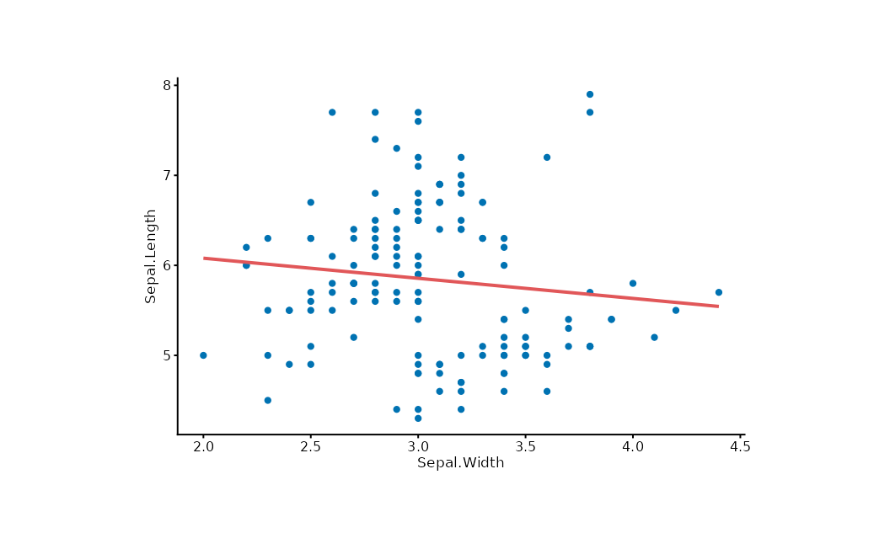
Prefer the verb API; use add_ggplot() for features
plotit has not wrapped.
Extending plotit
make_mark("mark_spoke", ggplot2::geom_spoke)
style_dark <- make_theme(
"style_dark",
plot.background = ggplot2::element_rect(fill = "#1a1a1a"),
text = ggplot2::element_text(colour = "white")
)Custom marks share the same registration path as built-ins
(position, rasterize, defaults).
Data-prep recipes
plotit consumes tidy tables; reshape with dplyr/tidyr before the pipe.
Rank / bump chart
set.seed(7)
df <- data.frame(
year = rep(c(2018, 2022), each = 4),
team = rep(letters[1:4], 2),
score = c(70, 80, 90, 60, 75, 85, 95, 65)
)
df |>
dplyr::group_by(year) |>
dplyr::mutate(rank = dplyr::row_number(dplyr::desc(score))) |>
dplyr::ungroup() |>
plotit(encode(x = year, y = rank, group = team, colour = team)) |>
mark_line() |>
mark_point()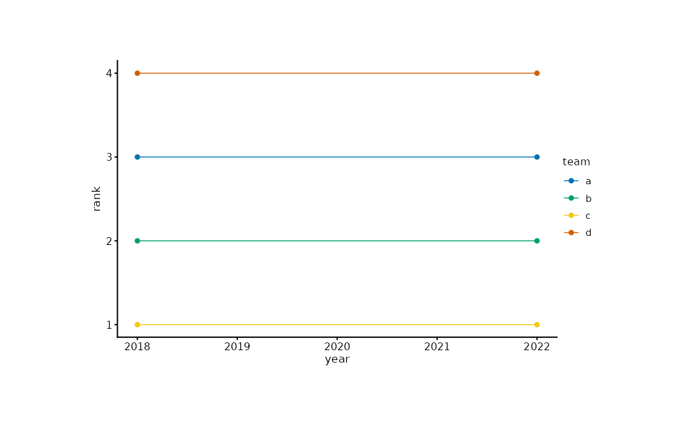
Waterfall
steps <- data.frame(
item = paste0("s", 1:5),
delta = c(100, -40, 30, -20, 50)
)
steps$end <- cumsum(steps$delta)
steps$start <- steps$end - steps$delta
steps$dir <- ifelse(steps$delta >= 0, "up", "down")
steps |>
plotit(encode(x = item, y = end, fill = dir)) |>
mark_rect(mapping = encode(xmin = item, xmax = item, ymin = start, ymax = end)) |>
mark_rule(yintercept = 0, colour = "#4E79A7")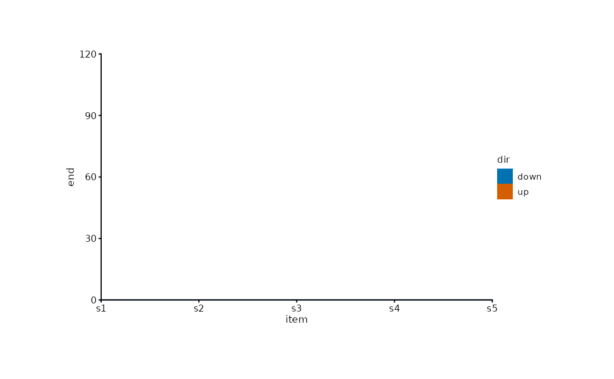
Mean ± SE summary
se <- function(x) stats::sd(x) / sqrt(length(x))
grpm <- data.frame(
Species = levels(iris$Species),
mean = tapply(iris$Sepal.Length, iris$Species, mean),
sem = tapply(iris$Sepal.Length, iris$Species, se)
)
grpm |>
plotit(encode(x = Species, y = mean, ymin = mean - sem, ymax = mean + sem)) |>
mark_point(size = 3) |>
mark_errorbar(width = 0.2)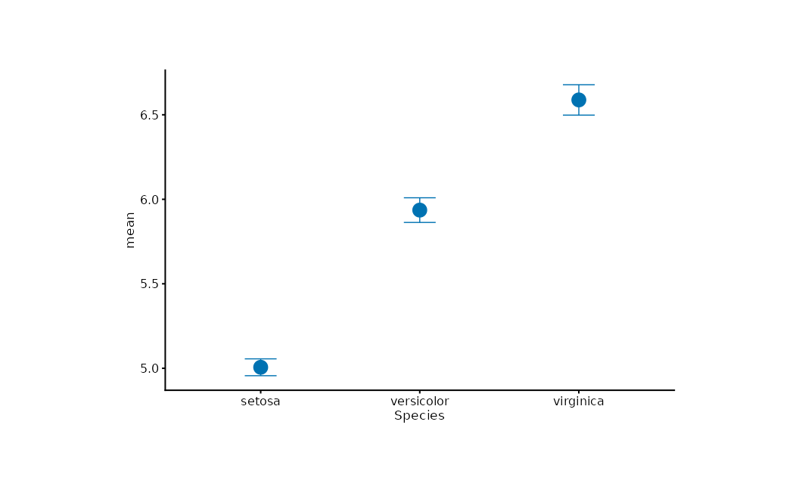
Group envelope
set.seed(7)
pts <- data.frame(
x = rnorm(60), y = rnorm(60),
g = rep(letters[1:3], each = 20)
)
pts |>
plotit(encode(x = x, y = y, colour = g)) |>
mark_point(alpha = 0.6) |>
mark_encircle(shape = "ellipse")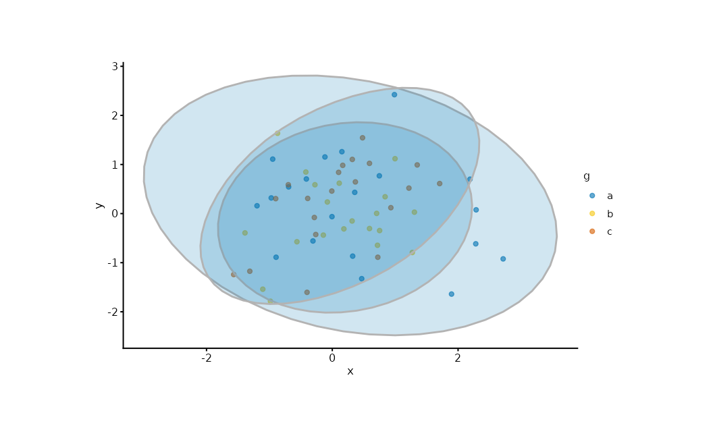
Next
- Gallery — chart families by intent
- API — the grammar as a system
- Design Goals — why the grammar looks this way